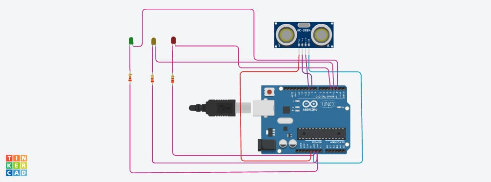

Federal Institute of Science and Technology (FISAT)
Welcome to my personal portfolio website. My name is Fida Fathima, and I am
currently pursuing a degree in Electronics and Instrumentation Engineering at
Federal Institute of Science and Technology (FISAT). This portfolio highlights
my educational background, interests, skills, projects, achievements, and
contact information.
About Me
I am Fida Fathima, an enthusiastic and dedicated Electronics and Instrumentation
Engineering student at Federal Institute of Science and Technology. I am passionate
about technology, automation, electronics, industrial instrumentation, and modern
engineering solutions. My academic journey has helped me develop analytical thinking,
problem-solving abilities, and a strong foundation in engineering principles.
Apart from academics, I enjoy learning about emerging technologies, participating
in technical workshops, and working on innovative projects. I believe that continuous
learning and practical experience are essential for becoming a successful engineer.
My goal is to contribute to technological advancements that improve efficiency,
sustainability, and quality of life.
Educational Background
Currently, I am pursuing my Bachelor's degree in Electronics and Instrumentation
Engineering from Federal Institute of Science and Technology (FISAT). My coursework
includes electronics, sensors and transducers, control systems, industrial automation,
microprocessors, embedded systems, and signal processing.
Education Details
Qualification
Institution
Status
B.Tech Electronics and Instrumentation
Federal Institute of Science and Technology (FISAT)
Currently Studying
Higher Secondary Education
Completed
Passed
Secondary Education
Completed
Passed
Technical Skills
Electronics Fundamentals
Instrumentation Systems
Industrial Automation
Control Systems
Embedded Systems
Programming Basics in C
HTML Fundamentals
Problem Solving
Personal Skills
Communication Skills
Teamwork
Leadership
Time Management
Critical Thinking
Projects
ARDUINO BASED DISTANCE INDICATOR SYSTEM

Autonomous / Remote Controlled Rover
Arduino-Based Distance Indicator System
Designed and simulated a distance monitoring system using an Arduino Uno, HC-SR04 ultrasonic sensor, and LEDs. The system measures the distance of nearby objects in real time and provides visual alerts through color-coded LEDs, demonstrating skills in sensor interfacing, embedded programming, and circuit design.
Industrial Automation Study
This project explores the importance of automation in industries. It examines
the role of programmable logic controllers (PLCs), sensors, actuators, and
control systems in improving efficiency and reducing manual effort.
Audio and Video
Audio Introduction
This audio file can contain a brief self-introduction describing my educational
background, interests, and career aspirations.
Project Demonstration Video
The video can showcase demonstrations of engineering projects, technical
presentations, or workshop activities.
If you would like to get in touch with me regarding academic collaborations,
projects, internships, or professional opportunities, please fill out the form below.